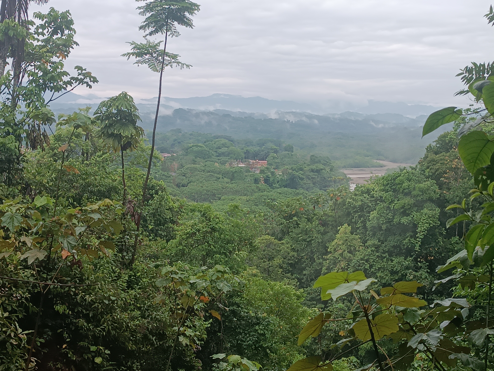

Visita Parque Machia
Lunes 13 de Octubre, 2025
La Inmensidad del Valle
"Desde lo alto, donde el viento susurra historias antiguas y el verde abraza el cielo."


Entre Ramas y Sombras
"Pequeños habitantes curiosos que nos observan desde su hogar natural."


El Guardián de Piedra
"El monumento del cocodrilo, testigo silencioso de nuestro paso por el parque."